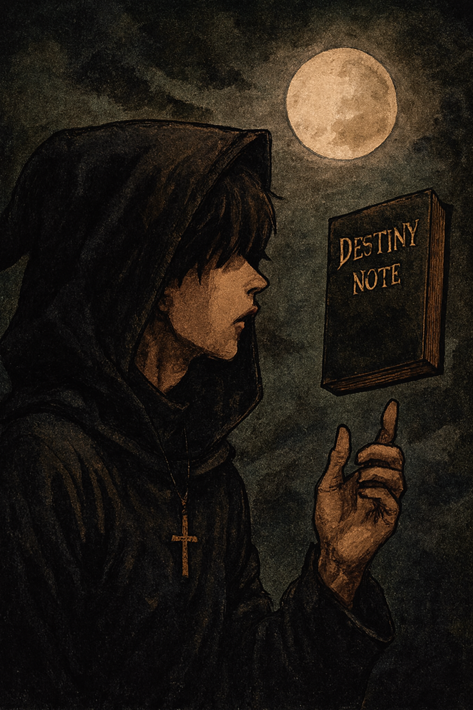
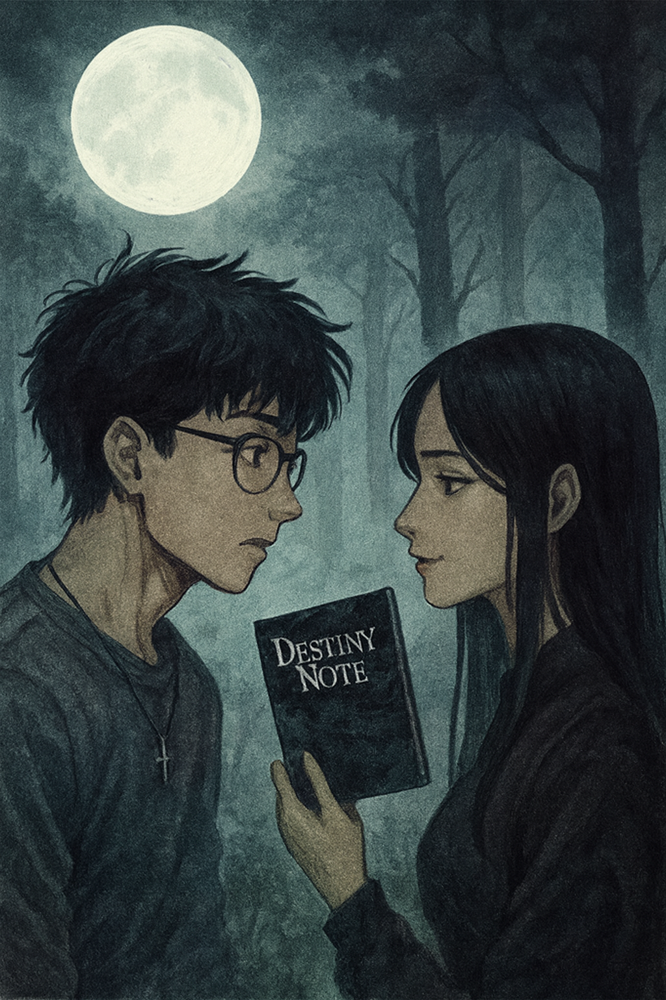
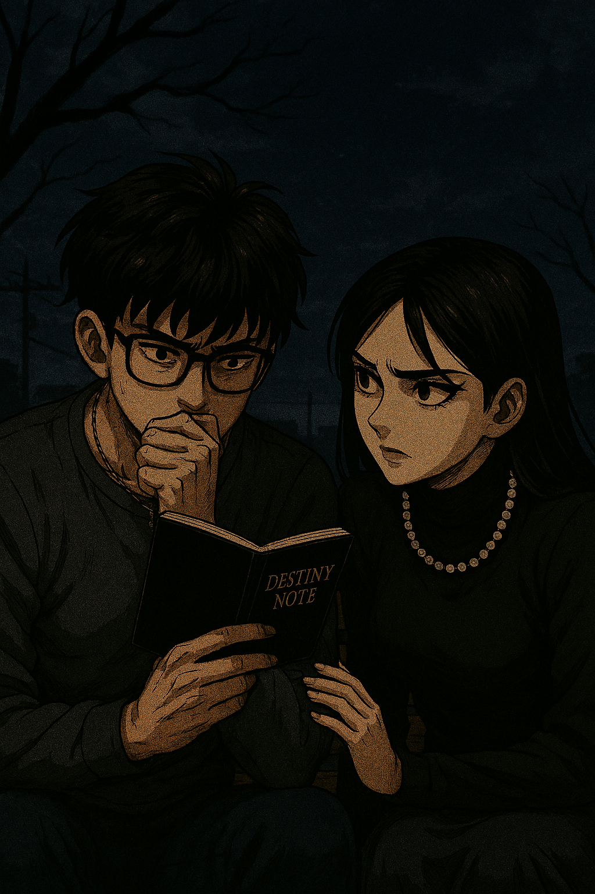

DESTINY NOTE — Créditos Finales
Epílogo
Eternidad.
Capítulo 1
La primera mirada.
Capítulo 2
La promesa bajo la luna.
Capítulo 3
La prueba.
Capítulo 4
El aniversario — Diciembre 2027.
Capítulo 5
El primer Año Nuevo juntos.
Prólogo
Diciembre 2026 — El cuaderno aparece.